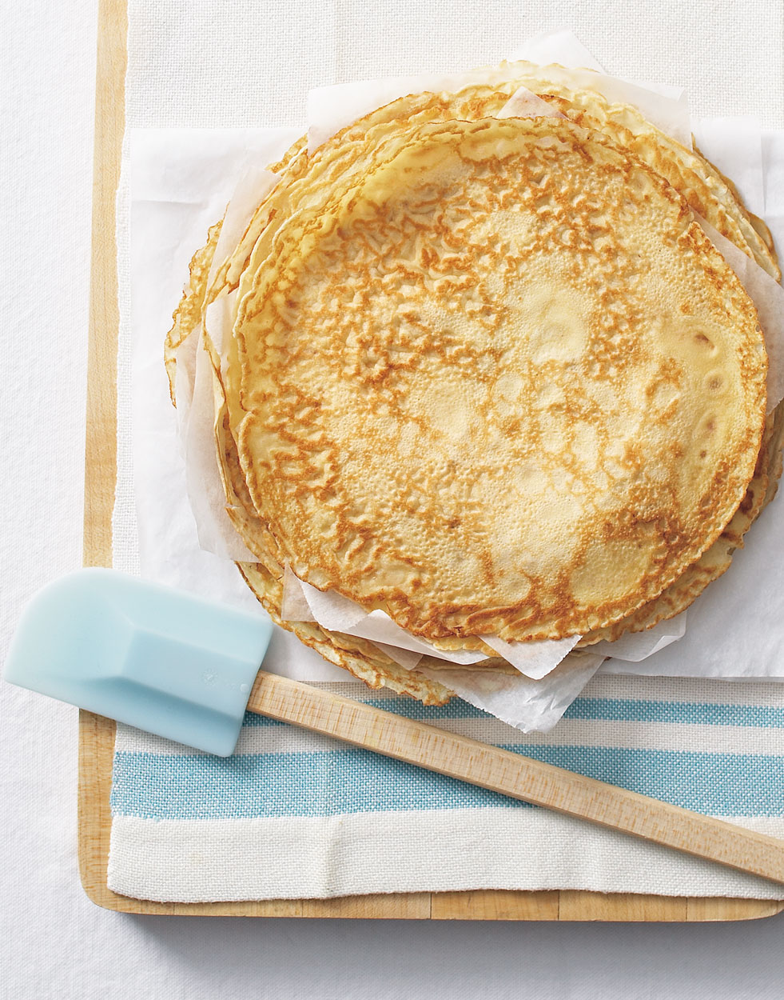

French Crepes

Description
French crepes are often cooked for weekend breakfasts,
or even for desserts.
Serve rolled up and filled with jam or fruit and whipped cream
Ingredients
- 1 cup all-purpose flour
- 1 teaspoon white sugar
- 1/4 teaspoon salt
- 3 eggs
- 2 cups of milk
- 2 tablespoons butter,melted
Procedure
- Sift together flour,sugar,and salt; set aside.
Beat eggs and milk together in a large bowl with a mixer.
Beat in flour mixture until smooth;
stir in melted butter.
- Heat a lightly oiled griddle or frying pan over medium-high heat
- Pour or scoop the batter onto the griddle using approximately
2 tablespoons for each crepe.Tip and rotate pan to spread batter
as thinly as possible.Brown on both sides.
Repeat this with the remaining batter.
Serve hot
French crepes have many nutritional benefits